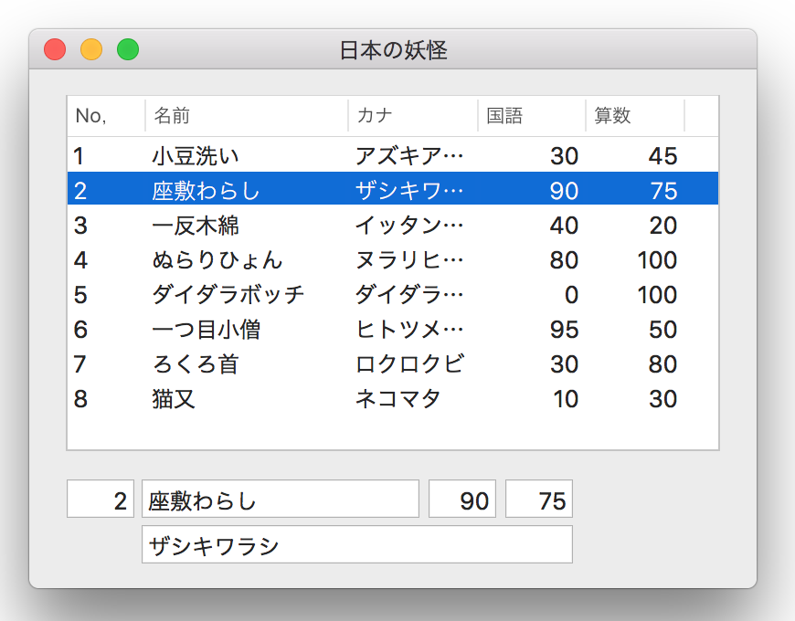
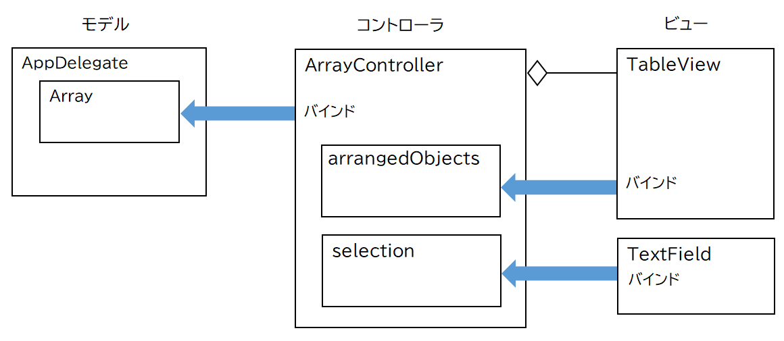
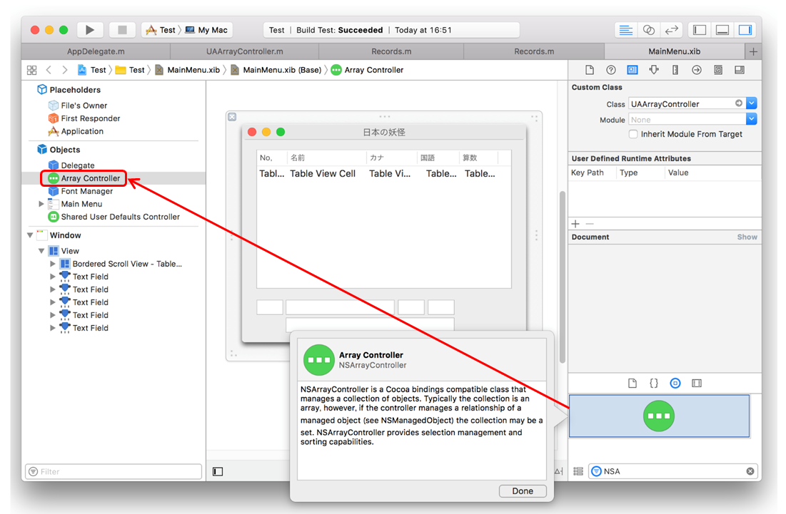
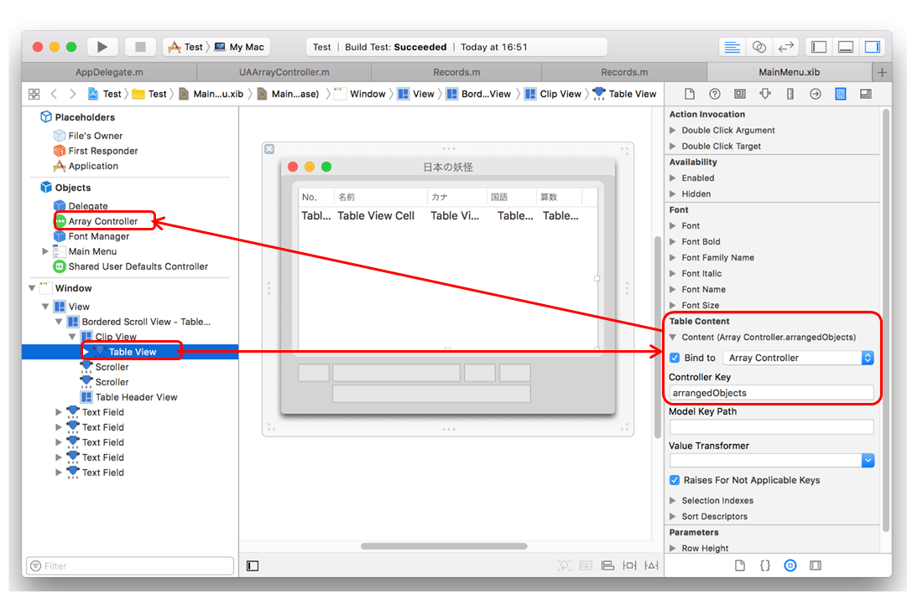
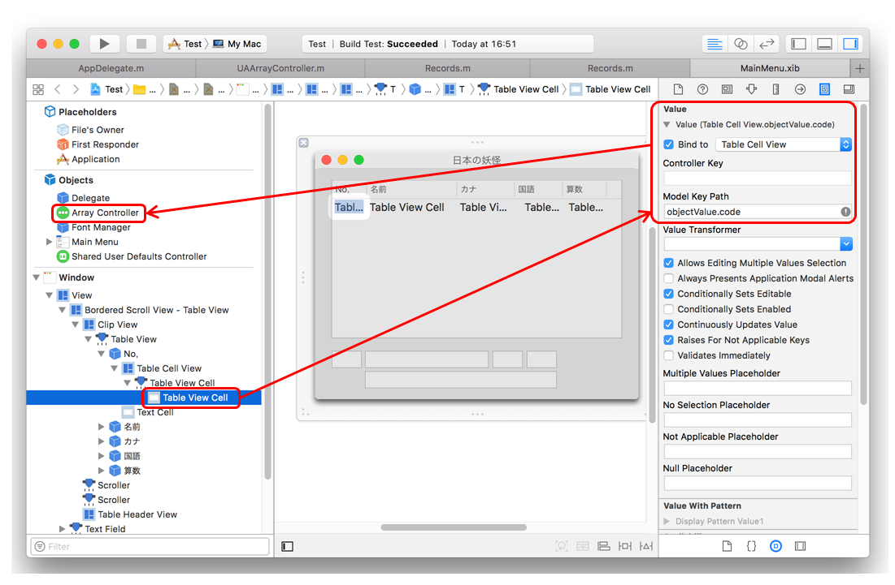
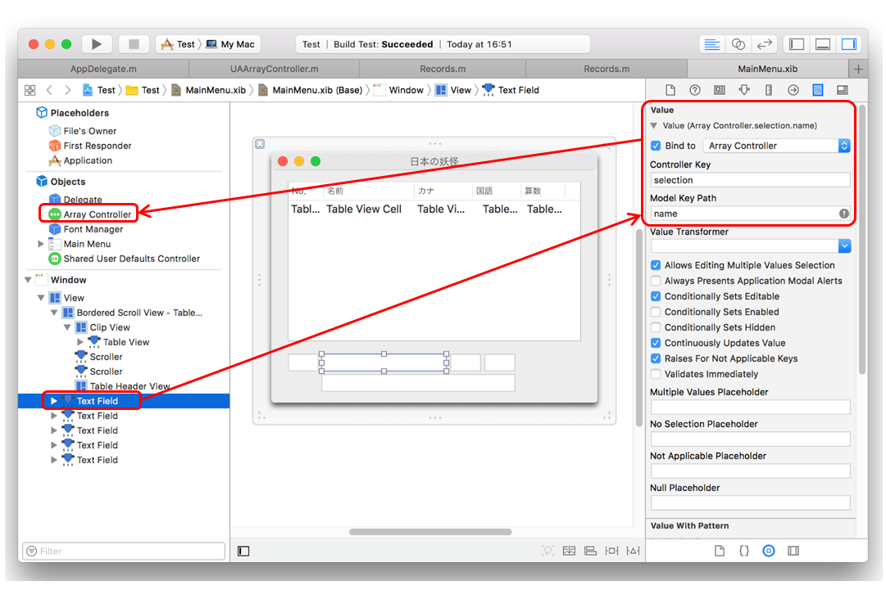
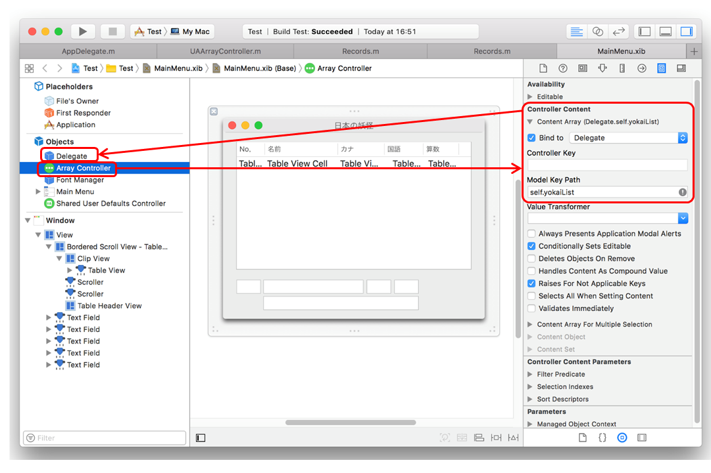

ArrayControllerを使ってテーブルビューを表示する
ArrayControllerとバインドを使って配列（NSArrayオブジェクト）の要素をテーブルビューを表示する方法について説明する。テーブルビューは ViewBasedとする。
バインドは、一例をあげれば、テキストフィールドを特定のクラスの特定のプロパティに結びつけ、プロパティの変化を監視し、値が変化したらその値を自身のビューに表示する。また、ユーザがテキストフィールドの値を変更したら、バインドしているプロパティに自動的に反映させるという機能を実現する。
これを、ActionやDelegateを駆使する従来型の方法で実現しようとするとかなり複雑な処理になる。これを、ほとんどプログラムコードを書かず、IntefaceBuilderの操作だけで実装することができる。
実装例

日本の妖怪の一覧と国語と算数の点数をテーブルビューに表示する。テキストフィールドには、テーブルビューで選択中の行のデータを表示する。テーブルビューの現在行を変えれば自動的にテキストフィールドのデータの表示も変わる。
ユーザがテーブルビューのセルの値を変更したら、その変更は自動的にテキストフィールドの表示データにも反映される。また逆に、テキストフィールドの値を変更すれば対応するテーブルビューのデータにも反映される。
クラス関連図
テーブルビューとテキストフィールドがひとつの配列をバインドするという構造

クラス構造は MVCモデルに則る。
テーブルビュー、テキストフィールドは ArrayControllerにバインドする。ArrayControllerはモデルの配列にバインドする。
テーブルビュー、テキストフィールドにはバインドを通して配列のデータが表示される。テキストフィールドにはテーブルビューで選択中の行のデータが表示される。
テーブルビューのセルの値をユーザが変更した場合、対応するモデルの配列の要素も同時に更新される。このとき、配列の当該要素をバインドしているテキストフィールドの値も自動的に更新される。逆にテキストフィールドの値を変更した場合も同じ流れとなる。
モデルの配列に対しプログラムで変更を行った場合も、同じようにテーブルビュー、テキストビューに反映される。（若干コードの追加あり）
実装手順
配列の要素は、Yokaiクラスというカスタムクラスとする。
Yokaiクラスは、Recordクラスをプロパティに持つ。
AppDelegateに配列を作成する。
xibファイルにArrayControllerオブジェクトを作成しインスタンス化する

各クラス間でバインドの設定を行う
TableView → Array Controller
Controller Keyは自動的にarrangedObjectsになる。

Table View Cell → ArrayController（Table Cell View）
テーブルビューのセルをtable Cell View（これは配列の要素と理解すればよい）にバインドする。Model Key Path の objectValue の後ろに配列の要素のプロパティ名を指定する。
continuouslyUpdateYalueをYESにすれば、値が一文字変更されるごとに即、モデルのデータに反映される。（次のText Fieldも同じ）

Text Field → ArrayController
テキストフィールドを Array Controller にバインドする。Controller Key を selection にすることで選択中の配列の要素を表示することができる。選択しているのは Array Controllerの要素であり、テーブルビューの選択行でないことに注意。

ArrayController → AppDelegate
Arry Vontroller をモデルであるAppDelegate の配列にバインドする。model Key Path の self の後に配列のプロパティ名を指定する。

NSArayControllerのサブクラスを作成し実装する
ユーザがテーブルビューの選択行を変更したとき ArrayControllerの現在行をそれに合わせる。ビューを初期表示したときテーブルビューの１行目を選択行とする。
バインドされたプロパティをプログラムで変更したとき、変更の通知をバインド元に知らせる方法
プロパティを更新するコードの前後を willChangeValueForKeyメソッド、didChangeValueForKeyメソッドで囲むこと。